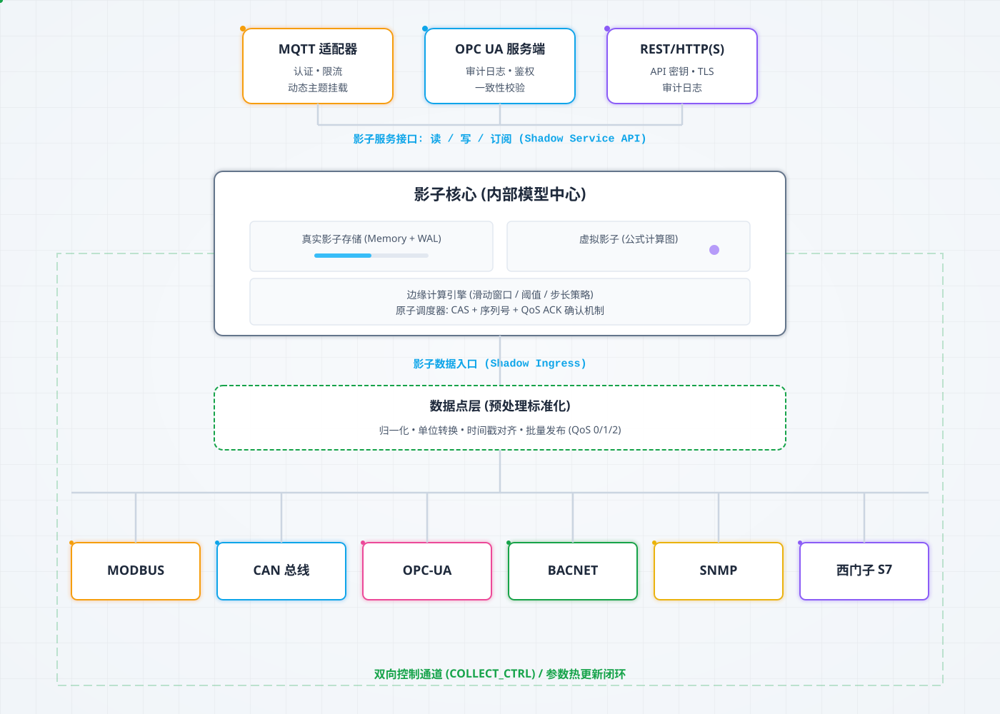
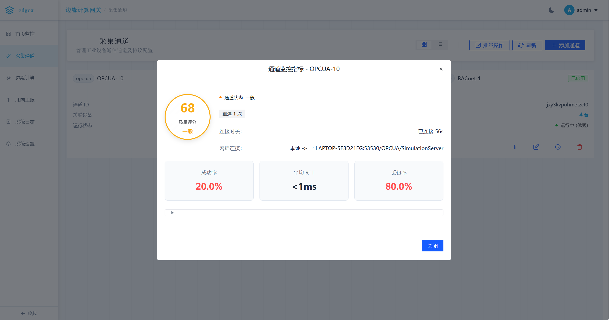
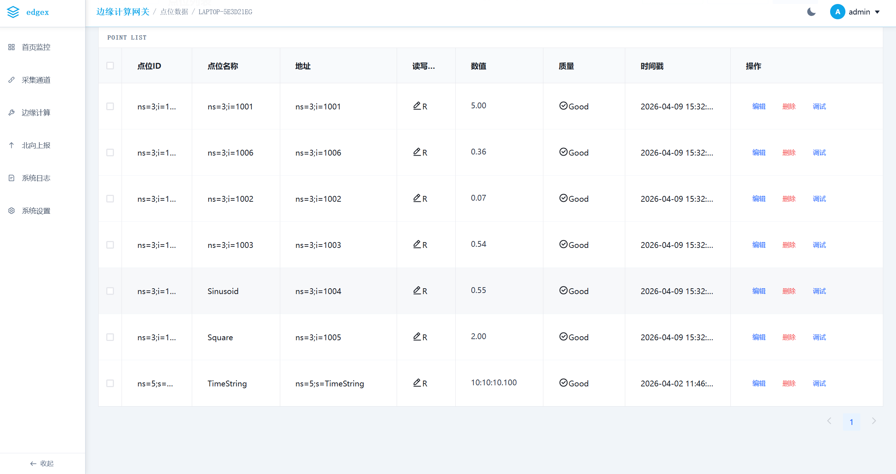
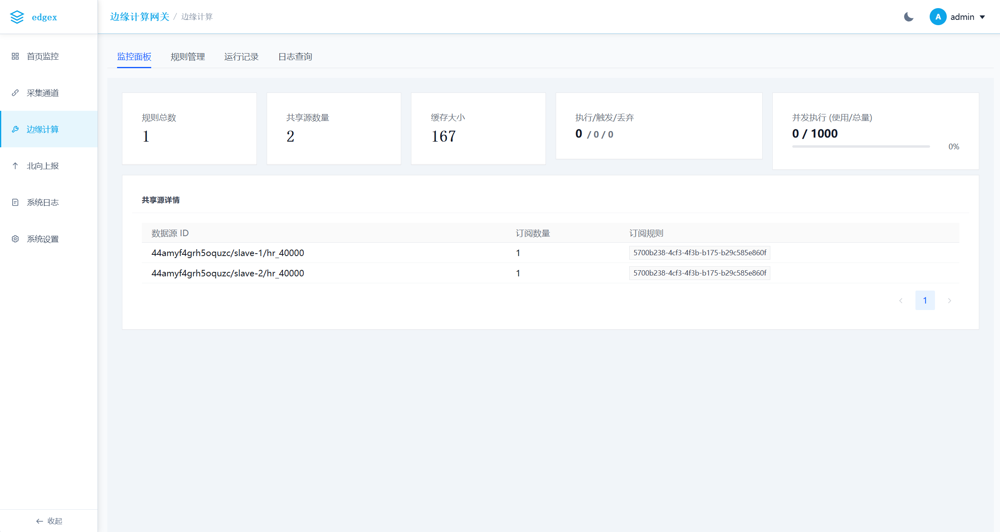
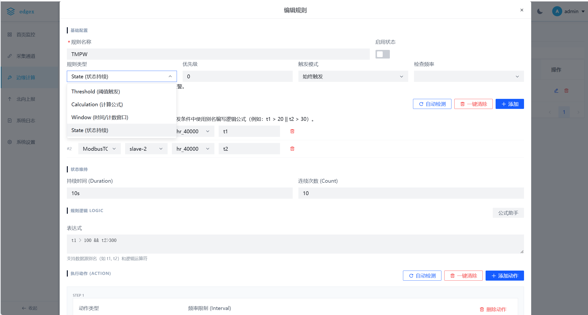
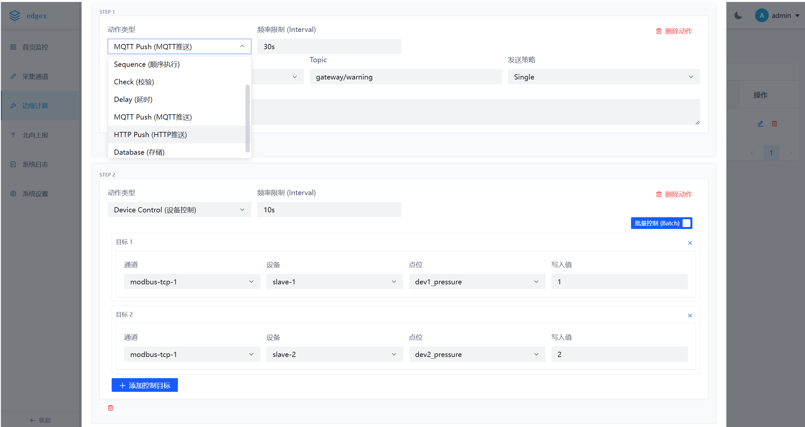

Industrial Edge Gateway
Industrial Edge Gateway 是一个轻量级的工业边缘计算网关，旨在连接工业现场设备（南向）与云端/上层应用（北向），并提供本地边缘计算能力。项目采用 Go 语言开发后端，Vue 3 开发前端管理界面。

数据流向示意图
✨ 主要特性
🚀 智能采集优化 (Smart Collection Optimization)
基于设备画像的自适应采集系统，实现南向通信的智能优化：
核心优势：
- 🎯 自适应参数：无需手动配置，系统自动学习最优采集参数
- ⚡ 效率提升：批量读取优化，减少通信次数，提升吞吐量
- 🛡️ 稳定性增强：智能心跳保活，快速故障检测与自动恢复
- 📊 可观测性：完整的设备画像与性能统计，支持运行监控
核心组件：
| 组件 | 技术原理 | 优化目标 |
|---|---|---|
| RTT 管理器 | 采用 EWMA 算法实时监测设备往返延迟，动态计算最优超时阈值 | 避免超时设置不当导致的通信失败，实现超时参数自适应 |
| MTU 管理器 | 自动探测设备最大传输单元，智能协商单次通信数据包大小 | 在保证可靠性前提下最大化数据吞吐量，提升批量采集效率 |
| Gap 优化器 | 基于设备负载状态与响应特性，动态调整通信请求时间间隔，支持 Modbus/PLC 寄存器读取的 Gap 合并策略 | 实现采集效率与设备负载的最佳平衡，提升总线通信效率 |
| 影子设备系统 | 统一内部数据模型，支持真实/虚拟影子设备，WAL 持久化 | 提供数据一致性校验与快速恢复能力 |
| 智能画像 | 自动学习设备 RTT、MTU、稳定性等特征参数 | 为每个设备建立通信画像，支持智能决策 |
| 采集调度器 | 基于设备画像优化采集顺序，支持批量读取优化 | 提升整体采集效率，降低通信开销 |
📦 轻量级部署 (Lightweight Deployment)
单文件部署，零依赖，多架构支持，适合各种边缘计算场景：
核心优势：
- 📦 单文件部署 → 一个可执行文件搞定，无需安装
- 🎯 零依赖 → 不需要额外安装任何库或环境
- 🌐 多架构支持 → ArmV7、Arm32/64、X86/64 全覆盖
- 💪 轻量级 → 128MB内存就能跑，1GB存储空间
硬件要求：
| 配置项 | 最低配置 | 推荐配置 |
|---|---|---|
| 内存 | 128MB | 512MB+ |
| 存储 | 1GB | 4GB+ |
| CPU | 单核 | 双核+ |
适用设备：
- ✅ 树莓派（全系列）
- ✅ 工业网关（Arm/X86）
- ✅ 虚拟机/云主机
- ✅ 嵌入式设备
📡 南向采集协议 (Southbound)
| 协议 | 状态 | 说明 |
|---|---|---|
| Modbus TCP / RTU / RTU Over TCP | 已实现 | 完整支持，基于 simonvetter/modbus；智能采集优化：支持自动探测从站 MTU、连接失败指数退避重连、全自动本地端口探测。增强解码器：支持 int32/uint32/int16/uint16 等多种整数类型转换与自动缩放。健壮性：自动识别非法数据地址并进入 24 小时冷却期 |
| BACnet IP | 已实现 | 支持设备发现 (Who-Is/I-Am)、多网口广播 + 单播回退、对象扫描与点位读写、批量读失败自动回退到单读、异常端口回退至 47808、读超时与自动恢复优化。新增本地模拟器支持 |
| OPC UA Client | 已实现 | 基于 gopcua/opcua 实现，支持读写操作、订阅与监控，支持断线自动重连 |
| Siemens S7 | 已实现 | 完整支持 S7-200Smart/1200/1500 系列 PLC；通信模式：支持 S7 协议 (ISO-on-TCP/RFC1006) 及优化的读取/写入操作；内存区域：支持 DB、输入/输出 (I/Q)、中间继电器 (M)、定时器 (T)、计数器 (C)；数据类型：支持位、字节、字、双字、整数、双整数、实数和字符串操作 |
| EtherNet/IP (ODVA) | 开发中 | 开发实现 |
| Mitsubishi MELSEC (SLMP) | 开发中 | 开发实现 |
| Omron FINS (TCP/UDP) | 开发中 | 开发实现 |
| DL/T645-2007 | 开发中 | 开发实现 |
☁️ 北向上报协议 (Northbound)
| 协议 | 状态 | 说明 |
|---|---|---|
| MQTT | 已实现 | 支持自定义 Topic、Payload 模板，支持批量点位映射与反向控制，提供服务端运行监控 |
| Sparkplug B | 已实现 | 支持 NBIRTH, NDEATH, DDATA 消息规范 |
| OPC UA Server | 已实现 | 基于 awcullen/opcua 实现，支持多种认证方式（匿名/用户名/证书）；安全增强：启用 Basic256Sha256 策略与证书信任机制；双向互通：支持客户端写入操作（云端反控）；提供服务端运行监控 |
🧠 边缘计算 & 管理
- 规则引擎: 内置轻量级规则引擎，支持 expr 表达式进行逻辑判断和联动控制
- 日志系统:
- 实时日志: 支持 WebSocket 实时推送，具备暂停/继续、日志级别筛选、清屏功能
- 历史日志: 分钟级快照持久化（bbolt），支持按日期查询与 CSV 导出
- UI体验: 现代化控制台风格，支持分页显示与倒序排列
- 可视化管理:
- 基于 Vue 3 + Vuetify 的现代化 UI
- 通道监控: 支持实时查看 TCP 链接状态，包括本地 IP:端口、远程 IP:端口、链接时长以及最后断开时间
- 点位管理升级: 支持点位批量删除，简化大规模点位维护；支持实时关键词搜索、质量状态筛选
- 登录安全: 支持 JWT 认证、LDAP / AD 域集成登录、登录倒计时保护
- 视图切换: 通道列表支持卡片/列表视图切换
- 交互升级: 采集通道配置支持 ID 自动生成、正则校验与嵌入式帮助文档
- 北向管理: 提供 OPC UA Server 安全配置与实时运行状态监控看板
- 配置管理: 采用模块化 YAML 配置 (conf/ 目录)，支持热重载（部分）
- 离线支持: 前端依赖已优化，支持完全离线局域网运行
🧠 边缘计算指南

虚拟影子引擎示意图
本网关内置强大的边缘计算引擎，支持基于规则的本地联动控制，特别针对工业位操作进行了深度优化。
1. 表达式语法
规则引擎兼容 expr 语言，并扩展了工业场景专用的语法糖：
基础变量：
v: 当前点位的实时值 (Value)
位操作增强：
针对 PLC/控制器常见的位逻辑，支持 1-based (v.N) 和 0-based (v.bit.N) 两种风格：
| 语法/函数 | 索引方式 | 说明 | 等效函数 |
|---|---|---|---|
v.N |
1-based | 获取第 N 位 (从1开始) | bitget(v, N-1) |
v.bit.N |
0-based | 获取第 N 位 (索引从0开始) | bitget(v, N) |
内置位运算函数：
bitget(v, n): 获取第 n 位 (0/1)bitset(v, n): 将第 n 位置 1bitclr(v, n): 将第 n 位置 0bitand(a, b),bitor(a, b),bitxor(a, b),bitnot(a)bitshl(v, n)(左移),bitshr(v, n)(右移)
2. 智能写入机制 (Read-Modify-Write)
当对寄存器进行位操作写入时，网关采用 RMW (读-改-写) 机制，确保不破坏其他位的状态。
场景： 仅修改 16位 状态字中的第 4 位 (v.4)，保持第 1-3 位不变。
流程：
- Read: 驱动读取当前点位完整值 (e.g.,
0001) - Modify: 根据公式
v.4(置位) 计算新值 (1001) - Write: 将新值
1001写入设备
配置： 在动作 (Action) 的写入公式中直接使用 v.N 即可触发此机制。
3. 批量控制 (Batch Control)
支持单条规则触发多个设备的动作：
- 多目标: 在 UI 中为同一个动作添加多个 Target (设备+点位)
- 并行执行: 引擎会自动并发处理所有目标的写入请求
4. UI 辅助
- 表达式测试: 规则编辑器内置"计算器"图标，可实时测试表达式结果
- 函数文档: 点击"查看函数文档"可浏览完整支持的函数列表与示例
5. 工作流引擎 (Workflow Engine)

边缘流示意图
规则引擎支持高级工作流编排，允许定义复杂的顺序控制逻辑：
- Sequence (序列): 按顺序执行一系列动作
- 特性: 如果某个步骤失败（例如 Check 动作不满足），整个序列将立即终止，后续步骤不会执行。这是实现安全联动逻辑的关键。
- Delay (延时): 在动作之间插入等待时间（例如
1s,500ms） - Check (检查): 验证某个条件是否满足（例如
v > 50）- On Fail (失败处理): 如果检查失败，可配置执行特定的"失败动作"（通常用于日志记录或回退操作）
- Rollback (回退): 一种特殊的动作类型，通常用于 Check 失败时恢复系统状态（例如关闭已打开的阀门）

边缘核心示意图
🛠️ 技术栈
后端: Go 1.25+
- Web 框架: Fiber
- MQTT: Paho MQTT
- Modbus: simonvetter/modbus
- OPC UA: gopcua/opcua
- 表达式引擎: expr
前端: Vue 3
- 构建工具: Vite
- UI 库: Vuetify 3
- 路由: Vue Router 4
- HTTP 客户端: Axios (带自动 Token 注入)
🚀 快速开始
前置要求
1. 启动后端
后端支持通过 -conf 参数指定配置目录（默认为 ./conf）。
# 获取依赖
go mod tidy
# 运行网关
go run cmd/main.go
# 或者指定配置目录
go run cmd/main.go -conf ./conf/2. 编译前端
前端代码位于 ui/ 目录下。生产环境构建后，后端会自动托管 ui/dist 静态资源。
cd ui
# 安装依赖 (建议使用 npm 或 pnpm)
npm install
# 编译生产环境代码
npm run build访问 http://localhost:8082 (默认端口) 即可进入管理界面。
默认账号见 conf/users.yaml（admin / passwd@123）。
3. 设备扫描与点位管理（BACnet）
- 通道页面进入设备 → 点位列表 → 点击"扫描点位"即可从设备读取对象列表（并行富化 Vendor/Model/ObjectName/当前值）
- 勾选后点击"添加选定点位"，系统将以
Type:Instance地址和合适的数据类型（AI/AV→float32，Binary→bool，MultiState→uint16）批量注册 - 发现流程：优先单播 WhoIs（目标 IP/端口），失败后进行多网口广播；仍失败时使用配置地址回退构造设备并标记为离线
- 扫描结果结构（示例字段）：
device_id,ip,port,vendor_name,model_name,object_name - 读取策略：批量读取失败时自动回退到单属性读取；读取/传输层超时已提升（典型 10s）并配合 30s 冷却的自动恢复机制
- 端口策略：尊重设备 I-Am 的源端口进行后续单播通信，异常时回退到标准端口 47808
- 网关通过 WebSocket 将最新值实时推送到前端，列表可见质量标签（Good/Bad）与时间戳
- 本机同时运行网关与模拟器时，如遇 47808 端口冲突，请将网关绑定到指定网卡 IP（例如
192.168.3.112:47808）而非0.0.0.0:47808
4. OPC UA 服务端指南
网关内置高性能 OPC UA 服务端，支持标准 OPC UA 客户端（如 UaExpert, Prosys）直接连接，实现数据监控与云端反控。
安全连接 (Security)：
- 默认启用
Basic256Sha256(SignAndEncrypt) 安全策略 - 证书管理: 自动生成有效期 10 年的自签名证书。首次连接时若提示证书不可信，请在客户端信任网关证书
- 用户认证: 支持
admin/admin(默认) 登录，也支持匿名访问（可配置）
双向互通 (Bi-directional)：
- 数据上报: 所有南向通道采集的数据自动映射到 OPC UA 地址空间 (
Objects/Gateway/Channels/...) - 反向控制: 支持客户端直接修改点位值（Write Attribute），网关自动透传写入指令至底层设备（如 Modbus 寄存器），实现远程控制
客户端连接示例 (UaExpert)：
- 添加服务器 URL:
opc.tcp://<Gateway_IP>:4840 - 选择安全策略
Basic256Sha256 - Sign & Encrypt - 认证方式选择
User & Password，输入admin/admin - 连接并浏览
Objects->Gateway->Channels查看实时数据
📡 API 概览
- 所有 API 需要携带认证头：
Authorization: Bearer <token>（默认账号见conf/users.yaml） - 扫描通道设备（多网口广播 + 单播回退）
POST/api/channels/:channelId/scan - 扫描设备对象（设备级，对 BACnet 注入
device_id/ip）
POST/api/channels/:channelId/devices/:deviceId/scan - 设备点位管理
GET/api/channels/:channelId/devices/:deviceId/points
POST/api/channels/:channelId/devices/:deviceId/points
PUT/api/channels/:channelId/devices/:deviceId/points/:pointId
DELETE/api/channels/:channelId/devices/:deviceId/points/:pointId - 实时数据订阅（WebSocket）
GET/api/ws/values - 边缘计算日志与导出
GET/api/edge/logs
GET/api/edge/logs/export
⚙️ 配置结构
配置文件已拆分为模块化 YAML 文件，位于 conf/ 目录：
server.yaml: HTTP 服务器端口、静态资源路径channels.yaml: 南向通道及设备配置northbound.yaml: 北向 MQTT/SparkplugB 配置edge_rules.yaml: 边缘计算规则配置system.yaml: 系统级网络配置users.yaml: 用户账号管理storage.yaml: 数据库路径配置
示例（BACnet 通道片段）：
id: bac-test-1
protocol: bacnet-ip
config:
interface_port: 47808
devices:
- id: "2228316"
enable: true
interval: 2s
config:
device_id: 2228316
ip: 192.168.3.112
port: 47808
points:
- id: AnalogInput_0
name: Temperature.Indoor
address: AnalogInput:0
datatype: float32
readwrite: R📅 TODO / Roadmap
核心驱动完善
- [x] OPC UA Client: 对接 gopcua/opcua 实现真实读写
- [x] Siemens S7: 实现 S7 协议的真实 TCP 通信
- [ ] EtherNet/IP: 实现 CIP/EIP 协议栈
- [ ] 其他驱动: 逐步替换 Mitsubishi, Omron, DL/T645 的开发实现
北向增强
- [x] OPC UA Server: 实现基于 awcullen/opcua 的服务端，支持多重认证（匿名/用户名/证书）与运行监控
- [ ] HTTP Push: 支持通过 HTTP POST 推送数据到第三方 HTTP 服务器
系统功能
- [ ] 真实系统监控: 替换 Dashboard 中的模拟 CPU/内存数据为真实系统调用 (如 gopsutil)
- [ ] 日志持久化: 提供基于文件的日志查看和下载功能
- [ ] 数据存储: 增强时序数据存储能力（目前仅存储配置和少量状态）
🕒 最近更新
- 2026-02-25:
- 点位管理增强: 实现点位批量删除功能，支持基于搜索关键词和质量状态的响应式实时过滤
- Modbus 稳定性优化: 增加非法数据地址（Exception 2）自动检测与 24 小时长冷却机制，彻底解决因无效地址导致的采集状态不稳定问题
- 2026-02-24:
- TCP 链路深度监控: 增加本地 IP:端口、远程 IP:端口、链接时长及最后断开时间显示
- 链路展示优化: 前端显示优化为直观的
本地 -> 远程连接模式 - UI 对话框优化: 通道监控对话框宽度增加 20%，提升信息展示密度
- 2026-02-20:
- Modbus 智能 MTU 探测: 自动探测并保存从站支持的最大寄存器数量，显著提升批量采集效率
- Modbus 指数退避重连: 优化连接策略，避免网络抖动时的频繁重连尝试
� 界面预览 (Gallery)
📊 概览与系统
登录页

首页监控

系统设置

🔌 南向采集 (BACnet / OPC UA)
通道列表

通道监控指标

BACnet 设备发现

BACnet 设备发现结果

BACnet 点位扫描

OPC UA模型扫描

OPC UA模型扫描结果

OPC UA数据订阅

OPC UA数据转换

🧠 边缘计算
计算监控

规则配置

边缘计算规则支持类型

边缘计算规则支持动作类型

规则帮助手册

规则日志

☁️ 北向数据
北向总览

MQTT 监控

MQTT 手册

�📄 License
Mozilla Public License 2.0 (MPL-2.0)